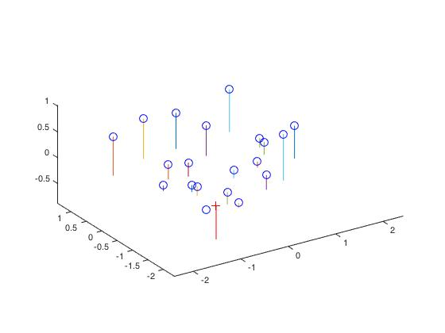
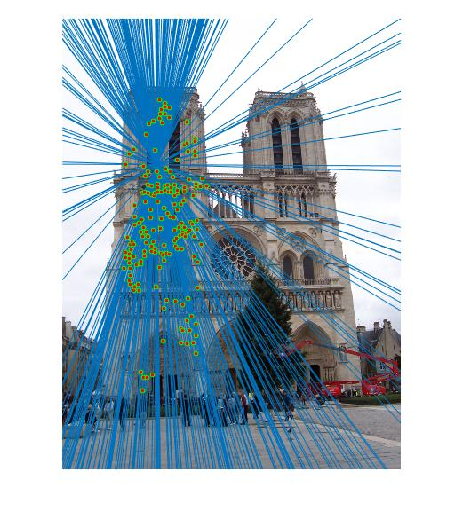
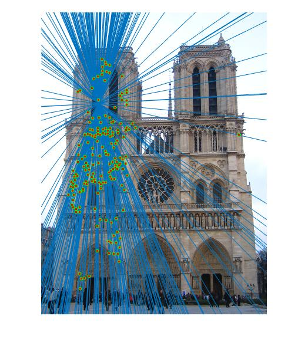
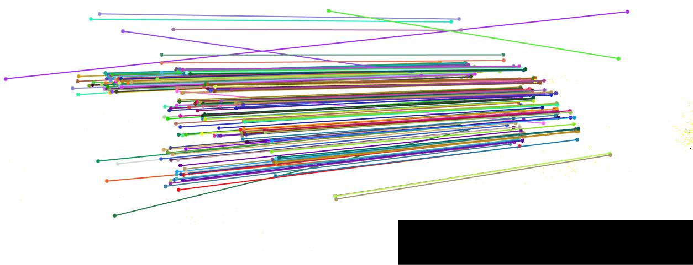

Example of epipolar line on the image.
This project focused on the camera calibration (transform between 2D points to 3D points) and solving correspondence problem through epipolar geomrtry (use 8-point algorithm to find fundamental matrix between 2D point from a pair of images). The whole project is consists of following parts:
In the first section, projection matrix is calculated to solve the transformation between matched real-world 3D and image 2D point pairs. And the center of camera is solved base on this. In the second, Fundamental matrix is built through 8-point algorithm and the given points are readily matched. In the following section, the given pairs are base on SIFT correspondence (which also contain many bad matches), and RANSAC is used to find inliers for each fundamental matrix transforms. In the image 'Mont Rush' and 'Dore Dame', good matches can be found with the third section, however, when it comes to the 'Gaudi' image pair, normalization should be done ahead in order to find reasonable matchings.
In this procedure, different threshold value are chosen to suppress bad matches in different pairs.
The projection from 3D real world coordinate to image coordinate of camera system can be depicted as 'x = K [ R | t ] X'. 'K' matrix refer to the camera intrinsic matrix while R and t refer to extrinsic matrix including the affine and translation. In all there are 11 degree of freedom, M = K[R t] is scale defined. Also, since t is rotated based on the origin camera center, camera center can be obtained by -Q^(-1)*m4 (in which Q denotes first three coulums of matrix M while the m4 denotes the last coulum of it).
To solve all 11 free parameters, least square method is used based on 20 corresponding points.
...
Num=20;
A=zeros(Num*2,11);
for k=1:1:(Num-1)
P3=Points_3D(k,:);
P2=Points_2D(k,:);
A1=[P3,1];
A2=-P2(1)*P3;
A3=-P2(2)*P3;
A(2*k-1,:)=[A1,0,0,0,0,A2]; % odd row of matrix A
A(2*k,:)=[0,0,0,0,A1,A3]; % even row of matrix B
end
b=[];
for j=1:1:Num
b=[b,Points_2D(j,:)];
end
[s,v,d]=svd(A);
M1=[(A'*A)^(-1)*A'*b';1]; %solve with least square
%M1=[A\b';1];
M=zeros(3,4);
for n=1:1:3
M(n,:)=M1(4*(n-1)+1:4*n);
end
...
Residue display:
|  |
Resulting projection matrix is: [0.7680 -0.4936 -0.0225 0.0071; -0.0852 -0.0913 -0.9063 -0.0877; 0.1830 0.2987 -0.0742 1.0000]
Camera center calculation: (resulting camera center: [ -1.5122, -2.3510, 0.2821 ])
...
Q=M(:,1:3);
m4=M(:,4);
Center=-inv(Q)*m4;
...
In the second part, fundamental matrix is estimated by 20 nicely matched corresponding points (between 2D points of different image). Fundamental matrix is induced from epipolar geometry: firstly use inverse of calibration matrix to set first camera coordinate system to world coordinate; find transformation matrix between the two converted corresponding 3D points; According to co-planar relationship between epipolar and base lines, get essential matrix E=[t]xR; at last, for the cases that intrinsic matrix K is not known, we have xt*F*x'=0 (in which F= K^(-t)*E*K^K'^(-1)).
...
ua=Points_a(:,1); %x coordinates of points in image a
va=Points_a(:,2); %y coordinates of points in image a
ub=Points_b(:,1); %x coordinates of points in image b
vb=Points_b(:,2); %y coordinates of points in image b
L=size(Points_a,1);
l1=ones(L,1);
A=[ub.*ua, ub.*va, ub, vb.*ua, vb.*va, vb, ua, va, l1]; % notice that is F_matrix map B to A
[U,S,V]=svd(A);
f=V(:,end);
F=reshape(f,[3 3])';
[UU,SS,VV]=svd(F); % solve by least square
SS(3,3)=0; % restrain rank(F) to be 2
F_matrix=UU*SS*VV';
...
Epipolar lines according to estimated fundamental matrix.
Compared with PART2, the matching correspondences found by simple SIFT matching (similar to last project) is rough and include many bad matches. Hence RANSAC method is applied to this situation to find best fundamental matrix and reject those outlying matches. The choices that might influence the accuracy of RANSAC is the threshold value (to define outliers) and the iteration times for the whole procedure.
Detail process is as follows:
...
itera = 2000; %iteration times
sigma=0.01; %threshold of deviation for RANSAC
sample=8; %%adopt 8point algorithm within the loop
L=size(matches_a,1);
count=zeros(itera,1); % number of found inliers in each iteration
sample_a=[]; % the random sample points for every iteration
sample_b=[];
temp_F=[]; % fundamental matrix found by present sample points
Best_Fmatrix=zeros(3,3); % F_matrix with most inliers (could be updated ones more inliers are found)
Max_inlier=0;
inlier=[]; % inlying points by current F_matrix
for K=1:1:itera
% step1 - find sample calcu the F
cc=randperm(L); % use randperm to produce non-repetitive 8 sample matches
c=cc(1:sample); % take first 8 of the random sequence
sample_a=matches_a(c,:);
sample_b=matches_b(c,:);
temp_F = estimate_fundamental_matrix(sample_a,sample_b); % call the function in PART2
%temp_F = estimate_fundamental_matrix_normal(sample_a,sample_b); % normalized fundamental matrix
% step2 - calcu the ri for every point
ri=[]; % deviation of every pairs from present epipolar plane
for m=1:1:L
xa=[matches_a(m,:)';1];
xb=[matches_b(m,:)';1];
dis=sum(abs(xb'*temp_F*xa).^2)^(1/2); %calculate deviation
ri=[ri;dis];
end
% step3 - decide inliers
fin=ri-sigma; %find matches within the threshold sigma
ind=find(fin <= 0);
Ninlier=length(ind);
count(K)=Ninlier;
% step4 - update max and fill in inlier
if Ninlier>Max_inlier
Max_inlier=Ninlier;
Best_Fmatrix=temp_F;
inlier=ind;
else
end
end
%%%%%%%%%%%%%%%%
inliers_a=matches_a(inlier,:);
inliers_b=matches_b(inlier,:);
Also, in suppressing bad matches, different sigma value are used. Result is as follow:
Mont Rushmore Epipolar lines and corresponding matches: (sigma= 0.02, iteration times 500)
Resulting F_matrix: [ -9.5476E-7 2.7928E-5 -0.0347
-2.7843E-5 -2.3405E-6 0.03446
0.03433 -0.0309 0.9977 ].
Dotre Dame Epipolar lines and corresponding matches: (sigma =0.08, iteration times 500)
Resulting F_matrix: [ -5.1334E-6 2.3517E-5 -0.00625
-2.8049E-5 -1.2322E-6 0.0059
0.0103 -0.0046 -0.6098 ].
Gaudi Epipolar lines and corresponding matches: (sigma 0.04, iteration times 500)
Resulting F_matrix: [ 2.7044E-7 3.4979E-7 -6.1151E-4
3.4169E-7 2.7217E-7 -6.1934E-4
-4.7907E-4 -5.2742E-4 0.9999 ].
According to the result above, we can find the correspondences shown in Guadi still contains bad matches due to the scale difference. Hence, we should adopt normalized fundamental matrix to rid of this problem, as follows in PART4.
Normalized 8-point algorithm in fundamental matrix estimation can improve the accuracy of local correspondences, especially in the image pairs different in scale( such as Gaudi ).
The procedure include: center the image data at origin and normalize the standard deviation (with means subtracted) and calculate normalized fundamental matrix, if Ta and Tb are the normalizing transform of image A and B, apply Tat*F*Tb to get origin fundamental matrix. The detailed process is shown as follow:
...
ua=Points_a(:,1);
va=Points_a(:,2);
ub=Points_b(:,1);
vb=Points_b(:,2);
L=size(Points_a,1);
l=ones(L,1);
%%%%%%%%%%%%%%%
%change to normalized coordinate
cax=sum(ua)/L; % the mean of A image x coordinates
cay=sum(va)/L; % the mean of A image y coordinates
disa=((ua-cax).^2+(va-cay).^2).^(1/2);
stda=std(disa); % standard divation of A image
Ta=diag([1/stda,1/stda,1])*[1, 0, -cax; 0, 1, -cay; 0, 0, 1]; % normalization transform matrix of A image
UA=Ta*([Points_a,l]');
ua=UA(1,:)';
va=UA(2,:)'; % the normalized points of image A
cbx=sum(ub)/L; % the mean of B image x coordinates
cby=sum(vb)/L; % the mean of B image y coordinates
disb=((ub-cbx).^2+(vb-cby).^2).^(1/2);
stdb=std(disb); % the normalized points of image B
Tb=diag([1/stdb,1/stdb,1])*[1, 0, -cbx; 0, 1, -cby; 0, 0, 1]; % normalization transform matrix of B image
UB=Tb*([Points_b,l]');
ub=UB(1,:)';
vb=UB(2,:)';
% 8point
l1=ones(L,1);
%A=[ua.*ub, ua.*vb, ua, va.*ub, va.*vb, va, ub, vb, l1];
A=[ub.*ua, ub.*va, ub, vb.*ua, vb.*va, vb, ua, va, l1];
[U,S,V]=svd(A);
f=V(:,end);
F=reshape(f,[3 3])'; % normalized F matrix
[UU,SS,VV]=svd(F);
SS(3,3)=0;
F=UU*SS*VV';
F_matrix=Ta'*F*Tb; % origin F matrix
...
Results can be shown as follows:
Mont Rushmore Epipolar lines and corresponding matches: (sigma= 0.06, iteration times 500)
Resulting F_matrix: [ 7.8123E-8 -8.0567E-6 0.0098
7.1976E-6 4.91923E-7 -0.0072
-0.0093 0.0072 -0.2875 ].
Dotre Dame Epipolar lines and corresponding matches:( sigma =0.03, iteration times 500 )
Resulting F_matrix: [ 4.0009E-7 1.0765E-5 -0.0081
-1.2448E-5 -4.3438E-7 0.0135
0.0067 -0.01135 0.9997 ].
|   |
Gaudi Epipolar lines and corresponding matches: (sigma = 0.04, iteration times 2000)
Resulting F_matrix: [ 1.0995E-6 4.2566E-6 -0.0013
-4.9361E-6 -4.2696E-8 0.0034
4.5390E-4 -0.0019 -0.0591 ].
|  |
From the results above, it can be seen that for first two pairs, normalized fundamental matrix estimation have less inaccurate matches than the origin one, given similar amount of total resulting matching( 333 for normalized Mont Rushmore, 322 for unnormalized Mont Rushmore; 182 for normalized Notre Dame, 204 for unnormalized Notre Dame). As for the scale varied Gaudi images, the result is greatly improved and can provide much better matches than former.